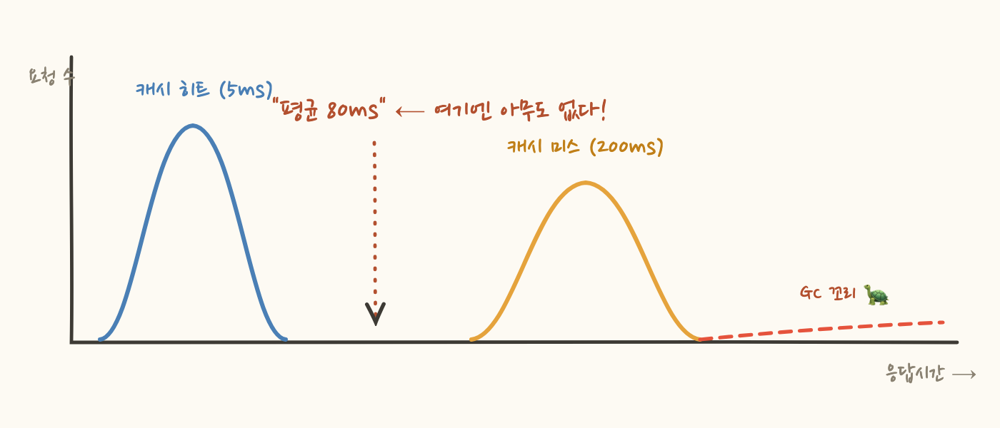
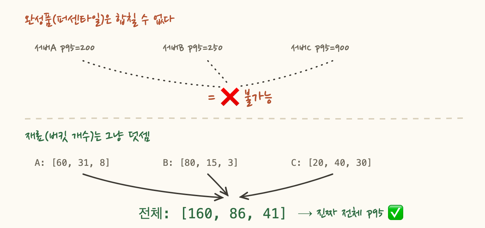

어느 팀이 에러 수를 게이지로 쟀습니다. 어느 날 30초 사이에 에러가 500건 폭발했다가 재시작으로 0이 됐어요. 그런데 대시보드는 평온합니다 — 수집 시점(0초, 60초)에는 둘 다 0이었으니까요. 장애가 있었는데, 그래프에는 없었어요.
미터 타입을 잘못 고르면 이런 일이 생깁니다. 이번 편은 게이지·카운터·타이머·분산요약·장기 작업 타이머를 하나씩 해부하고, 마지막에 "뭘 쓸지 3초 만에 고르는 알고리즘"으로 묶어볼게요.
모든 미터 선택은 이 질문에서 시작해요. 수준(level)은 오르내리는 현재 상태예요 — 큐 길이, 커넥션 풀 사용량, 힙 메모리. 이벤트(event)는 발생하는 사건이에요 — 주문 생성, 에러, HTTP 요청. 판별법은 간단합니다: "이 값이 0으로 돌아가는 게 자연스러운가?" 큐 길이가 0이 되는 건 정상 상태(수준)지만, 에러 누적 수가 0으로 돌아가는 건 정보 소실(이벤트)이에요.
수준이면 게이지, 이벤트면 나머지 — 이 갈림길이 서두의 사고를 설명해요. 에러는 이벤트인데 수준 측정 도구(게이지)로 쟀으니, 샘플 사이의 폭발이 통째로 증발한 거예요.
게이지는 체중계예요. 어제 안 쟀어도 오늘 잰 값은 오늘에 대해 100% 정확하죠. 매 샘플이 독립적으로 완전해서, 놓친 중간 변동이 이후 측정을 오염시키지 않아요. 대신 샘플 사이에 일어난 일은 구조적으로 못 봅니다 — 그게 괜찮은 대상(수준)에만 써야 하는 이유예요.
동작 방식도 독특해요. 값을 기록하는 게 아니라 "이 객체의 이 값을 주기적으로 읽어가라"고 참조를 등록합니다. 그런데 여기 유명한 함정이 있어요 — 게이지는 관측 대상을 약한 참조(weak reference)로 쥡니다. 관측 도구가 대상의 수명(GC)을 연장하면 안 되니까요. 감시 카메라가 피사체를 못 떠나게 붙잡으면 이상하잖아요.
"메트릭이 어느 날부터 NaN"이면 십중팔구 이 GC 함정이에요. 원칙은 하나 — 관측 대상은 비즈니스 코드가 소유해야 정상이고, 게이지는 구경꾼이어야 해요.
카운터는 가계부예요. 지출(이벤트)이 생길 때마다 그 자리에서 기록하니까 하나도 안 놓쳐요. 대신 어제 기록을 빼먹으면 총액이 영원히 틀리죠 — 증가분은 한 번 놓치면 복구가 안 됩니다. 게이지(체중계)와 정확히 반대의 성질이에요.

카운터에서 실제로 보는 건 누계가 아니라 rate(시간당 증가량)예요. "총 에러 12,847건"은 판단을 못 주지만 "분당 300건, 평소의 10배"는 행동을 만들죠. 알람도 항상 rate에 겁니다.
그리고 반전 하나 — 카운터는 기본 선택이 아니라 최후의 선택이에요. 뒤에 나올 타이머와 분산요약이 카운트를 이미 품고 있거든요. 카운터 단독은 "측정할 크기가 없는 순수 발생 사건"(로그인 시도, 캐시 미스)에만 쓰는 거예요.
이벤트에 측정할 크기(magnitude)가 있다면 이야기가 달라져요. 크기가 시간이면 Timer, 시간이 아닌 양(바이트, 금액, 개수)이면 DistributionSummary입니다. 그리고 이 둘은 내부에 카운터를 포함해요:
http.server.requests를 Timer로 재면 요청 수는 공짜로 딸려 나와요. 별도 카운터를 만들면 같은 걸 두 번 세는 중복이죠. 타이머 하나에서 호출 수, 합계, 최대값이 나오고 — 합계÷카운트로 평균, 옵션을 켜면 퍼센타일까지. (이 "합계와 카운트를 따로 보내는" 설계에 깊은 이유가 있는데, 그게 3편 전체의 주제예요.)
기록 API도 상황별로 준비돼 있어요:
Sample 방식의 숨은 강점: 성공/실패는 끝나봐야 아니까, outcome 태그가 필요한 측정은 자연스럽게 Sample로 가게 됩니다.
Timer의 맹점이 하나 있어요. 끝나야 기록됩니다. 3시간짜리 배치가 2시간째 돌고 있어도 Timer에는 아무것도 없어요. 행이 걸려 영원히 안 끝나는 작업은 영원히 안 보이고요. "지금 뭔가 너무 오래 돌고 있다"는 Timer로 원리적으로 감지 불가능해요.
LongTaskTimer는 접근이 달라요. 완료를 기다리지 않고 진행 중인 작업의 명부를 직접 관리합니다:
Timer가 부검(사후 기록)이라면 LongTaskTimer는 심전도(실시간 감시)예요. 데드락, 무한 루프, 외부 API 무응답으로 매달린 작업을 잡는 유일한 미터죠. 실무에서는 같은 배치에 둘 다 걸어요 — LTT로 "지금 문제 있나", Timer로 "평소 얼마나 걸리나". 역할이 안 겹치니 중복이 아닙니다.
이제 전부를 질문 다섯 개로 압축할 수 있어요:

마지막으로, 기능 목록으로 외우던 미터들을 데이터 모델로 재분류하면 구조가 한눈에 들어와요:
Function 계열은 "남이 이미 세고 있는 장부(캐시 히트 수, 스레드풀 완료 수)를 읽어오는" 카운터/타이머의 풀형 변종이에요. 라이브러리가 자체 카운트를 유지하고 있다면 또 세지 말고 이걸로 노출하면 됩니다. 새 미터를 만나면 "얘는 뭘 들고 있는 애지?"라고 물어보세요 — 접힌 집계인지, 남의 참조인지, 살아있는 명부인지. 그게 이 분류의 사용법이에요.